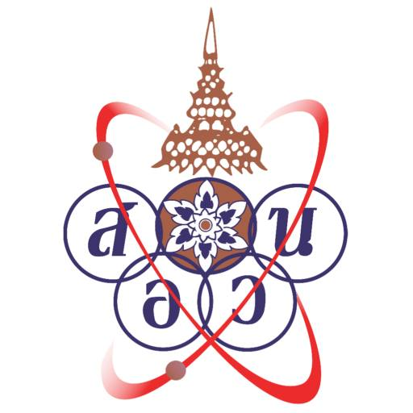

TOI-Zero คือก้าวที่ 0 ก่อนค่ายจริง และเป็นสนามซ้อมที่ใกล้ของจริงที่สุดสำหรับเด็กที่อยากไปต่อสายโอลิมปิกคอมพิวเตอร์
{kind=link}

บทความนี้วาง TOI-Zero ไว้อย่างชัดเจนว่าเป็น ก้าวที่ 0 ก่อนเข้าสู่ TOI และก่อนสมัครค่าย สอวน.คอมพิวเตอร์จริง จุดสำคัญไม่ได้มีแค่การคัดเด็ก แต่คือการสร้างสนามฝึกที่ “เหมือนของจริงที่สุด” ทั้งในแง่โจทย์และระบบตรวจแบบ IOI
อีกประเด็นที่น่าสนใจคือการเปิดให้ใช้ Python ได้ใน TOI-Zero แม้ค่ายจริงจะใช้ C/C++ เป็นหลัก นี่สะท้อนความตั้งใจจะขยายฐานผู้เริ่มต้น โดยเฉพาะเด็กที่เรียน Python มาจากโรงเรียน ให้สามารถเริ่มฝึกได้ทันทีโดยไม่ถูกกันออกจากระบบตั้งแต่ต้น
จุดเด่นของโพสต์นี้คือการเปลี่ยนภาพของค่ายเตรียมจากการสอบแบบวัดดวง มาเป็นระบบที่ต้อง สะสมจากการฝึก เป็นเวลายาวหลายเดือน ผู้เขียนบอกตรง ๆ ว่า ปีนี้ให้เวลาฝึกยาวขึ้น และไม่ฝึกก็ไปไม่รอด นี่ทำให้ TOI-Zero เป็นสนามสร้างนิสัยการฝึก มากกว่าสนามลุ้นคะแนนในวันเดียว
สนามที่ดีต้องใกล้ของจริงพอ แต่ไม่ปิดประตูคนเริ่มต้น
TOI-Zero ถูกออกแบบให้ใช้ระบบตรวจแบบ IOI และมีโจทย์ที่ทำให้เด็กสัมผัสบรรยากาศของการแข่งขันจริง ซึ่งช่วยสร้างความคุ้นเคยกับระบบและลดความเหลื่อมล้ำในการเตรียมตัวได้ดี
ในขณะเดียวกัน การยอมรับ Python ในช่วงเตรียมความพร้อมก็เป็นการออกแบบที่มีเหตุผล เพราะทำให้เด็กที่เริ่มจากบริบทโรงเรียนสามารถเข้ามาฝึกได้ก่อน แล้วค่อยต่อยอดสู่ภาษาที่ใช้ในค่ายจริงภายหลัง
เป้าหมายไม่ใช่แค่ติดค่าย แต่คือยกระดับทักษะที่ติดตัวไปถึงมหาวิทยาลัย
โพสต์นี้เน้นชัดว่า แม้เด็กบางคนอาจไม่ติดค่าย สอวน. แต่สิ่งที่ได้จาก TOI-Zero ยังมีค่ามาก เพราะช่วยยกระดับทักษะการเขียนโปรแกรม ความมั่นใจ และความพร้อมที่จะใช้ต่อในระดับมหาวิทยาลัย
มุมนี้สำคัญ เพราะทำให้ TOI-Zero ไม่ได้เป็นเครื่องมือคัดออกอย่างเดียว แต่เป็น infrastructure ของการพัฒนาคน ที่ส่งผลต่อคุณภาพของสังคมและ pipeline ของสายวิทยาการคอมพิวเตอร์ในระยะยาว
วัฒนธรรมการฝึกต้องเปิดให้คุยกันได้ แต่ไม่ทำลายความซื่อสัตย์ของระบบ
ผู้เขียนวางกติกาไว้น่าสนใจมาก: เด็กสามารถคุยกัน ถามกัน และสอนกันได้ แต่ห้ามให้ซอร์สโค้ดเพื่อนเด็ดขาด เพราะเมื่อระบบตรวจลอกทำงาน เด็กที่ให้และเด็กที่ลอกจะโดนเท่ากัน นี่เป็นการสร้างวัฒนธรรมการเรียนรู้ที่แยก การช่วยกันคิด ออกจาก การโกง อย่างชัดเจน
ในทำนองเดียวกัน การเปิดให้ครูและติวเตอร์นำโจทย์ไปใช้สอนได้ตามสบาย แต่ไม่สนับสนุนการส่งโค้ดเฉลยตรง ๆ ก็เป็นการออกแบบระบบนิเวศการเรียนรู้ที่เปิดกว้าง แต่ยังรักษา integrity ของสนามฝึกไว้
TOI-Zero คือจุดเริ่มต้นเล็ก ๆ ของความหวังใหญ่ในระดับประเทศ
ช่วงท้ายของโพสต์สะท้อนเป้าหมายที่ใหญ่กว่าโครงการมาก คือความหวังว่าจะได้เห็นเด็กไทยเก่งขึ้น และมีโอกาสลุ้น เหรียญทอง IOI อีกครั้ง นี่ทำให้ TOI-Zero ไม่ใช่เพียงกิจกรรมเตรียมสอบ แต่เป็นกลไกต้นน้ำของระบบ talent development ระดับประเทศ
ดังนั้น บทความนี้จึงไม่ได้พูดแค่เรื่องค่ายหนึ่งค่าย แต่พูดถึงการสร้างฐานการฝึกที่จริงจัง ยาวพอ และเป็นธรรมพอ เพื่อให้เด็กที่อยากไปต่อในสายนี้มีทางเริ่มต้นที่ชัดและมีคุณภาพ